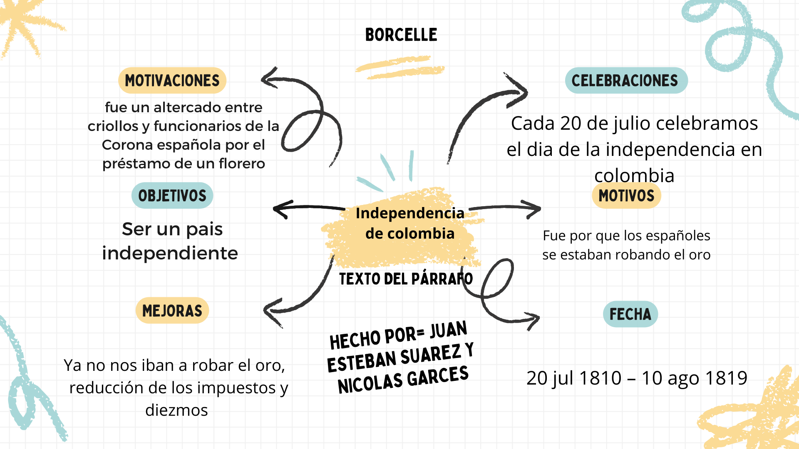

Identidad Nacional Colombiana
Nuestras raices colomiabanas, estamos situados en el extremo norte de sudamerica vecinos son venzuela,
panama, brasil, perú y ecuador.
Somos criollos de españoles, nos independisamos el 20 de julio de 1810 Algunos elementos que contribuyen a la identidad nacional colombiana son:
1. Diversidad cultural: Colombia es un país multicultural con influencias indígenas, africanas y españolas.
2. Historia: La lucha por la independencia, la colonización española y la formación de la república.
3. Geografía: La diversidad de regiones, como la Amazonía, los Andes y la costa Caribe.
4. Música y danza: Géneros como el vallenato, cumbia, salsa y bambuco.
5. Gastronomía: Platos típicos como el bandeja paisa, arepas, empanadas y sancocho.
6. Fiestas y tradiciones: Fiestas de San Pedro, Semana Santa, Fiestas de la Independencia.
7. Valores: Hospitalidad, resiliencia, pasión por la vida y amor por el país.
8. Idioma: El español es el idioma oficial, con variantes regionales.
9. Deporte: El fútbol es el deporte más popular, seguido del ciclismo y el boxeo.
10. Naturaleza: La riqueza natural, como la Amazonía, los páramos y la biodiversidad.
Estos elementos, entre otros, contribuyen a la rica identidad nacional colombiana.
